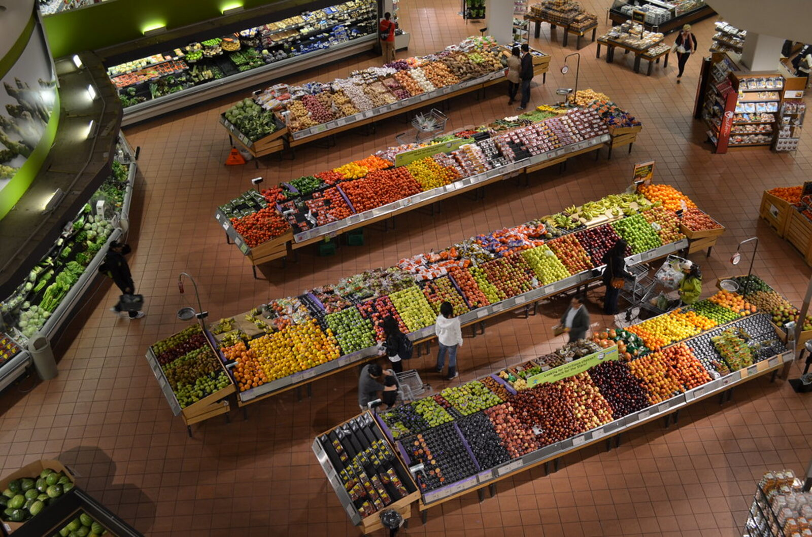
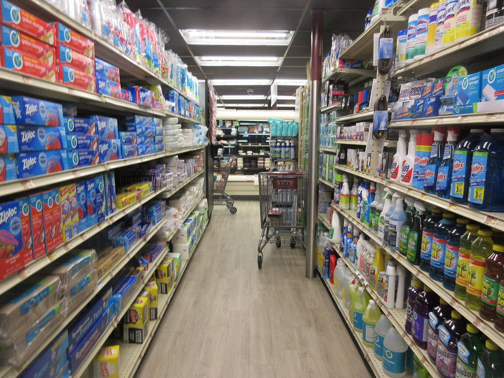

01שטחים שאינם מנוצלים
אזורים בחנות שאינם מייצרים מכירות, פינות מתות ומדפים שאינם עובדים בהתאם לפוטנציאל שלהם.
תכנון ואופטימיזציה של נקודות מכירה על בסיס 25 שנות ניסיון בקמעונאות, סידור חנויות והבנת התנהגות הלקוחות.

סעיף 01
לקוחות עשויים להיכנס לחנות, אך לא להגיע למוצרים הנכונים, לפספס מבצעים או לעזוב לפני שסיימו את הקנייה. עומס במעברים, מדפים שאינם מנוצלים נכון, מחלקות שממוקמות במקום לא מתאים ונראות חלשה של מוצרים יכולים להשפיע ישירות על הפדיון.
אזורים בחנות שאינם מייצרים מכירות, פינות מתות ומדפים שאינם עובדים בהתאם לפוטנציאל שלהם.
מסלול תנועה שאינו מוביל את הלקוח דרך המחלקות המרכזיות, ויוצר עומס במעברים ובקופות.
מוצרים בעלי תרומה גבוהה שממוקמים בגובה, במיקום או בסביבה שאינם מקבלים מספיק תשומת לב.
עומס, חוסר סדר ותצוגה לא ברורה שמקשים על הלקוח להתמצא ולזהות את המבצעים.
סעיף 02
בני לפקוביץ מביא 25 שנות ניסיון בעולם הקמעונאות, מתוכן שבע האחרונות בייעוץ לנקודות מכירה. השירות אינו מתמקד רק במראה החנות, אלא בשאלה כיצד כל החלטה תכנונית יכולה לשרת את המכירות, את נוחות הלקוחות ואת העבודה השוטפת של הצוות.
אופי החנות, סוג הקהל, שעות העומס ודפוסי הקנייה המאפיינים את נקודת המכירה.
מעבר מסודר על המחלקות, המדפים, המעברים, הקופות והתצוגות בפועל.
היכן נעצרת התנועה, היכן נשחק שטח מכירה והיכן קיים פוטנציאל שאינו ממומש.
המלצות ישימות לשיפור, מסודרות לפי סדר עדיפות ומותאמות למציאות של החנות.
סעיף 03
מנקודת מכירה אחת, דרך רשת סניפים, ועד תכנון חנות חדשה מאפס.
✓ השירות הזמין והמיידי ביותר
מתאים לבעל חנות אחת שרוצה להבין מה ניתן לשפר כבר עכשיו — וגם ליישם את זה.
מתאים לרשתות ולבעלי כמה סניפים, שבהם כל סניף עובד אחרת ממה שלידו.
מתאים ליזמים, בעלי רשתות ובעלי חנויות הנמצאים לפני הקמה או מעבר למקום חדש.
סעיף 04
תהליך ברור, בלי הפתעות, שמתחיל בשיחה קצרה ומסתיים בהמלצות שאפשר ליישם.
מבינים את סוג החנות, האתגרים והמטרות.
עוברים על החנות, המחלקות, המדפים וזרימת הלקוחות.
מאתרים בעיות, שטחים לא מנוצלים והזדמנויות מסחריות.
מקבלים המלצות מסודרות, ברורות וישימות.
ליווי מקצועי בביצוע השינויים בפועל, בקצב שמתאים לחנות.
חיבור לספקים מומלצים ותמחור מלא של כל אחד מהשלבים, בלי הפתעות.
סעיף 05
שמי בני לפקוביץ, ויש לי 25 שנות ניסיון ניהולי ומסחרי בענף הקמעונאות, מתוכן שבע השנים האחרונות בייעוץ לנקודות מכירה.
לאורך השנים ניהלתי סניף ברשת אושר עד ומילאתי תפקיד ניהולי ברשת מזון מובילה בירושלים. צברתי שם ניסיון מעשי בניהול חנות, סידור מחלקות, הצגת מוצרים, תפעול צוותים והבנת דפוסי הקנייה של הלקוחות.

סעיף 06
סעיף 07
תיאום שיחת היכרות קצרה לבחינת מצב החנות והאפשרויות לשיפור.
מילוי הטופס אינו מחייב. אחזור אליכם לשיחה קצרה להבנת הצורך.
תודה שקראתם עד הסוף
פופ סטייל · תכנון ואופטימיזציה לנקודות מכירה
היועץ: בני לפקוביץ
תצוגה מקדימה של עולם חזותי חלופי · חזרה לאתר